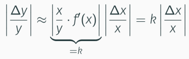

Mathe Klausur
Vorlesung 14: Fehler beim Rechnen mit Zahlen
Fehler beim Rechnen mit Zahlen
Absoluter Fehler: Δx = ~x-x
Relativer Fehler: Δx/x = ~x-x/x
Fehlerfortspflanzung: Wenn man mit einem Fehler weiter rechnet wird dieser Fehler immer größer.
Verstärkungsfaktor

Je geringer der Verstärkungsfaktor k ist, desto besser ist die Funktion konditioniert.